Progression et étape d'une partie en Survie
Pour commencer,le début de toutes parties en survie,il faut prendre du bois pour pouvoir
construire une table de craft permettant la construction d'énormement d'items dans le jeu.
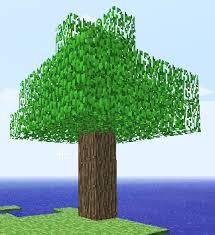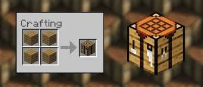
Ensuite le joueur peut se construire un abri pour se protéger des monstres,aller miner pour récolter des
matériaux(pierre,fer,or,redstone,diamants)pour construire des items plus solides et performant comme des armures ou des armes.
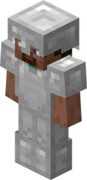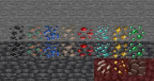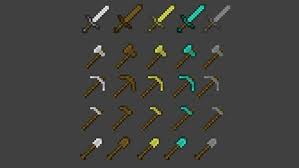
Cet équipement sera utile pour survivre dans le nether,une dimension très hostiles.
Pour accéder au Nether,il faut fabriquer un portail.Il y en a qui apparaissent naturellement et qu'il faut compléter.
Le portail du Nether est en obsidienne et s'allume avec un briquet.
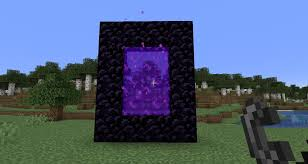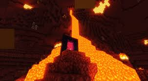
Le joueur doit obligoitarement se rendre dans le nether car c'est la bas qu'il trouvera les blaze rod en tuant des blazes
items essentiel pour construire les yeux de l'end qui permettent de localiser le stronghold,l'endroit ou se trouve
le portail et de le compléter.Dans l'end se trouve l'ender dragon,le boss final du jeu.
 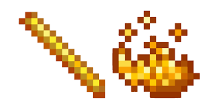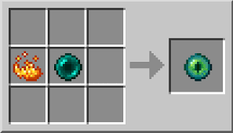
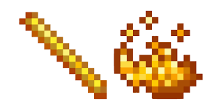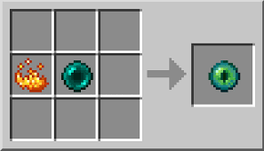 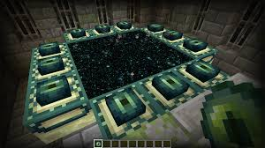
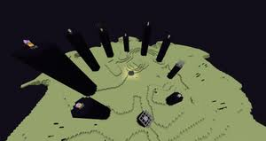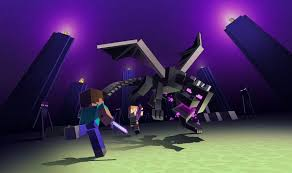
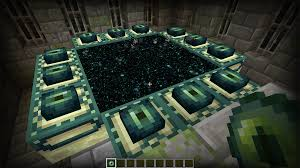
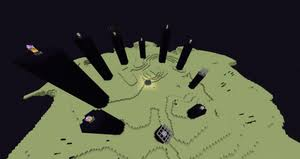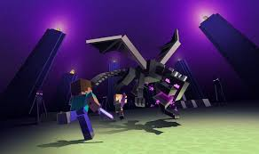
Pour vainvre l'ender dragon il faut d'abord briser tous les cristaux qui se trouvent au sommet des tours d'obsiennes pour que le
ne puisse plus se régénerer.Ensuite il faut attaquer le dragon avec ses armes jusqu'à ce que sa barre de vie se soit vidée.
Une animation se lance ou le dragon explose et libère des milliers de points d'xp puis le portail pour rentrer dans l'overwolrd et celui pour aller
explorer les îles secondaires et les structures de l'end s'ouvrent.
Tuer l'ender dragon est l'accomplissement du jeu mais n'est pas la fin.
Car le joueur peut ensuite continuer sa survie,créer des bases,des fermes à ressources,explorer le monde etc...